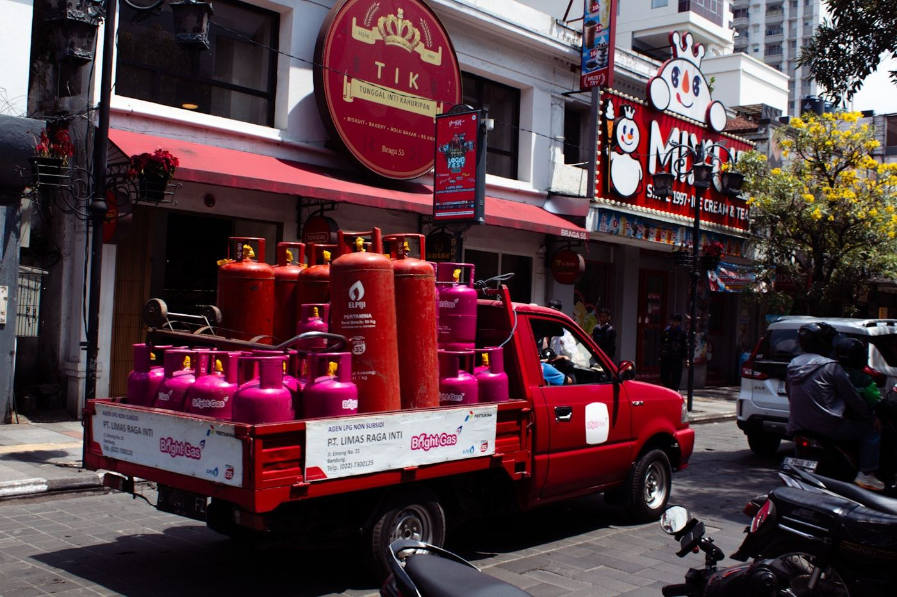

Cylinder Testing in Dublin
You don't need a test house in Dublin to get Dublin cylinders tested properly. We collect from sites across Dublin on our ADR routes, test everything at our Kilmallock facility, and get cylinders back to you in days, not weeks.
How it works from Dublin
We don't have a testing facility in Dublin, and we won't pretend otherwise. Every cylinder we test is tested at our facility in Kilmallock, Co. Limerick. What we run for Dublin customers is a collection route: our ADR-compliant vehicles collect cylinders from your site, bring them to Kilmallock for testing, and return them on the same service.
Tell us where you are and roughly how many cylinders you have, and we'll confirm the next available collection date for your area. Your cylinders travel on properly placarded vehicles, with trained drivers and the correct transport documentation, from the moment they leave your site until they're back on your rack.
Old or condemned cylinders can be collected on the same run for decommissioning and documented disposal.

What we test
Full-service cylinder testing, refurbishment, disposal and logistics, all under one roof in Kilmallock.
Cylinder Testing & Recertification
Periodic inspection and hydrostatic testing to ISO 18119 and EU Pi-mark (TPED) standard, with certification paperwork you can hand straight to your customer.
Refurbishment
Shot blasting, repainting and valve servicing to bring tired cylinders back to a like-new standard.
Cylinder Filling
Cylinder filling carried out on site once testing and inspection is complete.
Collection & Storage
Nationwide ADR-compliant collection and transport, plus secure storage for cylinders awaiting testing or dispatch.
Cylinder Disposal & Decommissioning
Recovery, decommissioning and recycling of old cylinders, with a certificate of disposal for your records.
Fire Suppression Cylinders
FM-200, Novec 1230, inert gas and CO2 suppression system cylinders tested, refilled and decommissioned — the only facility in Ireland equipped to handle them.
Who uses it in Dublin
Data centres & facilities
Data centres hold banks of fire suppression cylinders, FM-200, Novec 1230 and inert gas, that fall due for periodic testing. We are the only facility in Ireland equipped to test, service, refill and decommission them. See our Fire protection page.
Pharma & laboratories
Pharmaceutical and laboratory sites run on industrial gas cylinders that need periodic inspection to keep their EU Pi-mark validity. We test them to ISO 18119 and TPED standard, with certification paperwork for your records. See our Cylinder testing page.
Hospitality & beverage
Hotels, pubs and drinks distributors rely on beer gas and CO2 dispense cylinders every day. We test and refill them so the taps keep pouring. See our Brewing & beverage page.
Fire protection companies
Extinguisher servicing companies send us batches of CO2 and extinguisher cylinders for testing and overhaul, timed around their servicing rounds rather than a UK courier schedule. See our Fire protection page.
Why not send them to the UK?
Many Dublin businesses still ship cylinders to Britain for testing. Since Brexit that means a ferry crossing, customs paperwork in both directions and weeks of downtime, and a periodic inspection carried out by a GB-appointed body doesn't automatically keep a cylinder's EU (Pi-mark) validity for use here.
Testing in Kilmallock means one Irish invoice, no ferry, no customs, and your cylinders back in days rather than weeks. Read our guide: Why Test in Ireland.
Questions from Dublin customers
Is there a cylinder testing facility in Dublin?
No. All testing is carried out at our facility in Kilmallock, Co. Limerick, Ireland's only independent cylinder testing facility. We collect from Dublin on our ADR-compliant collection routes, so you get the testing without organising your own transport or a UK shipment.
How does collection from Dublin work?
Tell us where you are and roughly how many cylinders you have, through the quote form or by phone, and we'll confirm the next available collection date for your area. Cylinders travel on ADR-compliant transport, are tested in Kilmallock, and come back to you with one Irish invoice covering the job.
How long will my cylinders be away?
Days, not weeks. Because there's no ferry crossing or customs process, cylinders tested in Kilmallock are back with you in days rather than the weeks a UK round trip takes.
Ready to book a collection?
Tell us what you have and we'll come back with pricing, turnaround and collection options.
Other areas we collect from
We run collection routes across all 32 counties. See how it works in:
Or read more on nationwide collection & storage.